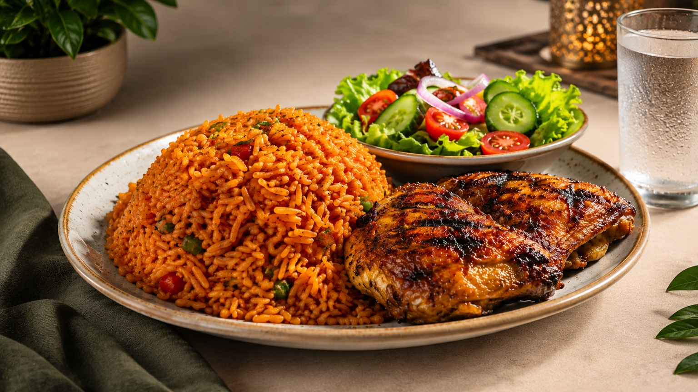
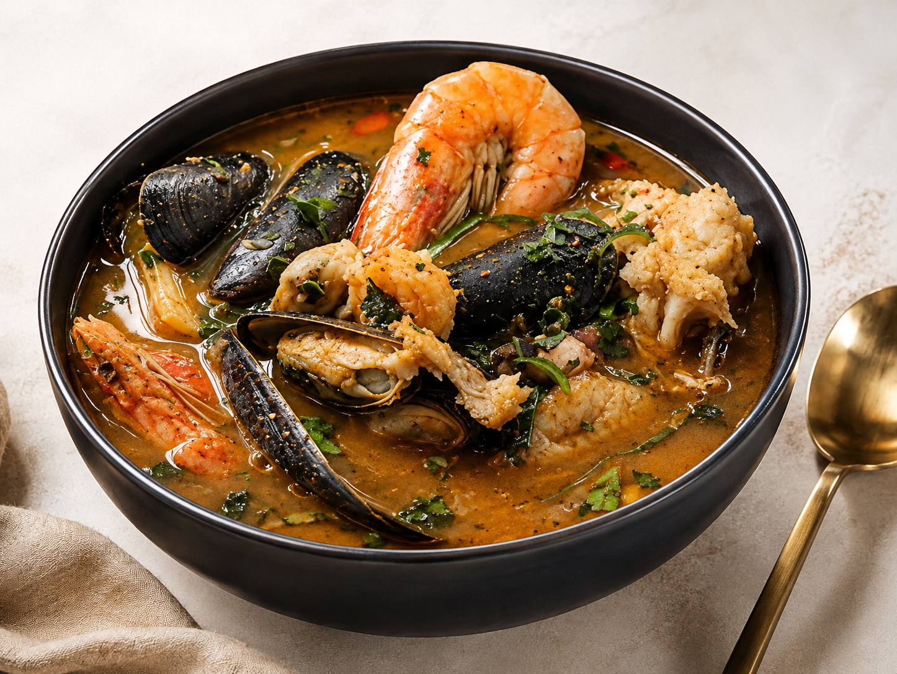
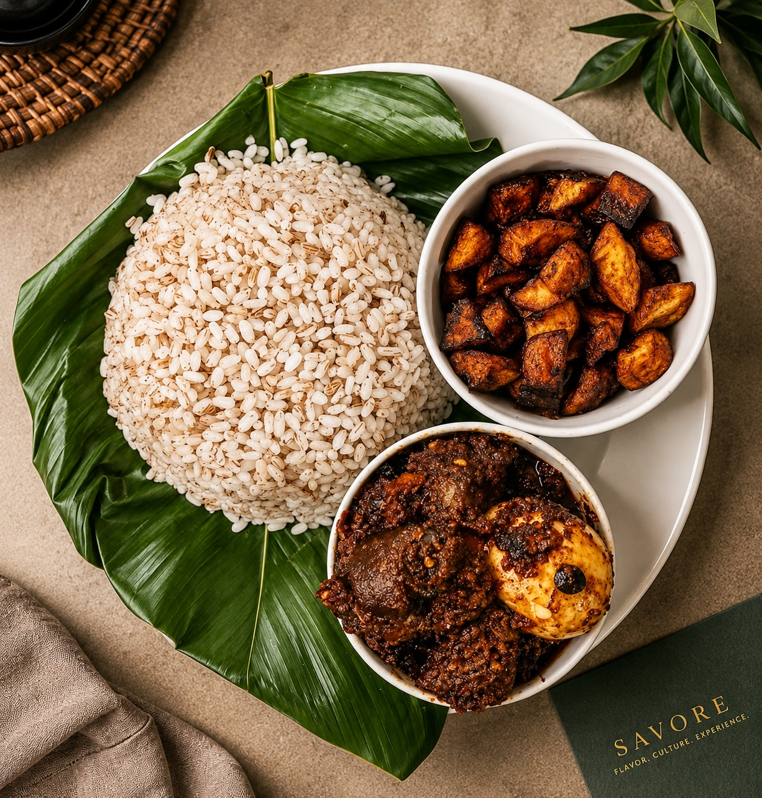

Jollof Royale
₦6,500Smoky party jollof with our signature grilled chicken.
Savoré Lagos
Authentic Nigerian flavors, thoughtfully prepared and served with a contemporary touch.

The Savoré Experience
From smoky suya and rich jollof to freshly prepared seafood and globally inspired dishes, Savoré brings together the flavors people know and the flavors they're yet to discover.
Learn more about us →We source the best local ingredients alongside premium produce.
Traditional techniques meet modern culinary artistry.
Warm ambience, excellent service and a dining experience built to linger.
13, Osho Street, Shomolu, Lagos.
From the kitchen
Four dishes that capture the Savoré point of view.

Smoky party jollof with our signature grilled chicken.

Charcoal-grilled beef, house spice blend, onions and peppers.

Fresh seafood in a fragrant Nigerian pepper broth.

Ofada rice, ayamase sauce and your choice of protein.
Our Story
Savoré began with a simple idea: Nigerian food deserves to be experienced beyond the boundaries of tradition.
We preserve the flavors, ingredients and techniques that make Nigerian cuisine distinctive while giving our kitchen room to experiment and create.
Read our story
Reservations
Your table is waiting.
Visit Savoré
Find us at 13, Osho Street, Shomolu, Lagos.
Get directions →